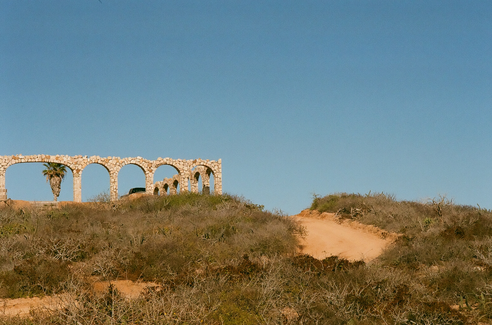

The handmade arches of Rancho ShibumiThe rocks of Joshua TreeNorthern view of Jalama beachThe famous arch at the southern tip of baja californiaCampers enjoying a cold beer on the beach after a hikeFishermen on the sourthern view of Jalama beachOne of the many beacutiful rocks found in the central coastThe beautiful blues and greens found in Northern California lakesThe mountain views of Northern California